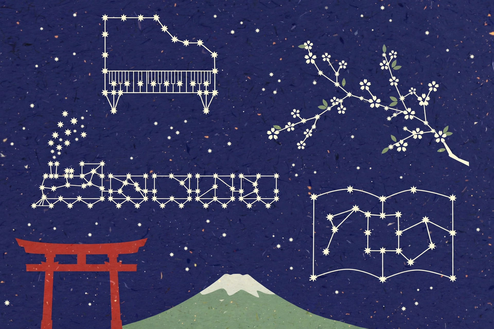

日本語学習 · JLPT N5 → N1 · 日语学习设计
一語一星、学びは星図になる。每学一个词，就点亮一颗星。
这是一款只为日语设计的学习应用：单词卡、汉字卡、语法卡都放进一张星图里，配日语母语发音、跟读和 FSRS 复习。整条主线只有一条——JLPT 等级地图 N5 → N1。你在哪一档，看到的单词、例句、注音和语速就跟到哪一档；每一屏、每一张卡、每一道题都标着它属于哪个等级。

授業 · 课程（第1课 → 第6课）
順番に学ぶ — あ行から、は行まで · 按顺序学：从あ行到は行
这就是你每天晨课的六课，按课次顺序排好：每课一行新假名（あ行 → か行 → さ行 → た行 → な行 → は行），一篇本课短文，短文配可播放的朗读音频——音频逐句录制、句间留真实停顿、接近日常说话的语速，读的正是下面显示的原文，一字不差。每个单词都带发音和例句：点单词旁的喇叭按钮就能听日语读音，例句旁的小喇叭能听整句，例句下有中文对照，帮你把词放进句子里记。点左侧课次切换。
中心軸 · JLPT レベル対応 · 等级主线
一枚の地図で N5 → N1 · 一张地图管全程
词汇与汉字数量是用于规划的累计约数（JLPT 官方不公布词表）。教材对照以《新版中日交流标准日本语》（标日）为主线，方便正在学标日的同学直接对位。
在应用里怎么看这张图：你始终处在一个学习档里，可以预览高一档的内容；高一档显示为「挑战」，高两档先锁定，等低一档学扎实再开——解锁规则见下方「学习逻辑」。
学習の仕組み · 学习逻辑
初回からレベルアップまで · 从第一次打开到升级
没有断头路：每一步都接到下一步，所有结果都用 JLPT 档位说话，你随时知道自己在哪一档、下一步去哪。
1 · 学習の流れ · 从入门到每天坚持
初めて · 第一次打开
先选目标：JLPT 目标档（N5–N1）、考试日期、每天分钟数（10 / 20 / 30 / 45 / 60）。免注册。
レベル診断 · 等级测试
自适应测试：假名、词汇、汉字、语法、听力。约 15 题、6 分钟。可跳过，跳过就从 N5 开始。
結果 · 测试结果
总档位 + 每项技能的档位 + 在档内的位置（如「N5 上段，≈第 20 课」），并标到星图上。
今日のプラン · 每日计划
按你的档位、目标和分钟数生成：新单词、新汉字、到期复习、一篇阅读、一次口语练习。
毎日の学習 · 每日循环
見る → 聞く → 思い出す → 話す → 復習する（FSRS）。学一点，星亮一点，档位进度条涨一点。
月例模試 · 每月模考
每月最后一个周日，按当前档位限时模考。结果重新对位各项技能，并调整下月计划。
2 · レベル診断の仕組み · 等级是怎么测出来的
- 从 N5 开始。一档一档往上测：先假名和基础词汇，再汉字、语法、听力。
- 自适应：一档内连对 2 题 → 跳到该档末尾，再试探高一档；连错 2 题 → 退回确认低一档。
- 停止条件：某档确认成立（档内正确率 ≥ 70% 且高一档 < 50%），或答满 20 题。
- 计分：每项技能（假名 / 词汇 / 汉字 / 语法 / 听力）各自定档。总档位 = 语法与词汇中较低的一档，不会把你放到语法撑不住的高度。
- 展示方式：总档位、档内位置（下 / 中 / 上段）、各项技能条，再加一个教材锚点（如「≈ 标日第 20 课」），方便在学标日的同学自查。
3 · 今日のプランの作り方 · 每日计划的生成规则
- 输入：当前档位与位置、目标档、考试日期、每天分钟数、FSRS 到期数、上次模考结果。
- 时间分配（默认）：35% 复习（FSRS 到期优先）· 30% 新单词与新汉字 · 20% 阅读 / 听力 · 15% 口语与输出。
- 各档新学上限：N5 约 12 词 + 2–3 汉字/天 · N4 约 15 + 3–4 · N3 约 18 + 4–5 · N2 约 20 + 5 · N1 约 20 + 5 且阅读权重更高。
- 防欠账：到期复习超过当天预算时，新学自动暂停——复习债不会悄悄越堆越多。
- 考前冲刺：考试前最后 4 周，新学逐步收尾，模考 + 复习占比升到约 70%。
4 · 学習ループ · 学习循环：見る・聞く・思い出す・話す・復習する
見る · 看
插图卡：单词、汉字、场景图。N5–N4 显示振假名，N3 起默认隐藏。
聞く · 听
母语发音 + 声调线。N5–N4 可慢速，N3 起用自然语速。
思い出す · 回忆
主动回忆练习：看意思说词、听音选义、句子填空、汉字书写（N4 起）。
話す · 说
跟读 + 短角色扮演，只用当前档及以下的语法。每周一次口语专练。
復習する · 复习
FSRS 为每张卡排期。当天第一次作答计入正确率；答错的卡会更早回来。
5 · FSRS 復習ルール · FSRS 排期规则
- 三类卡共用一个队列：词汇卡、汉字卡、语法句型卡——每张卡有自己的稳定度与难度。
- 目标记住率：默认 90%，设置里可调 85–95%。记住率越高，间隔越短，每天复习量越大。
- 评分：重来 / 难 / 好 / 简单。「重来」的卡在本次练习内再出现，之后约 10 分钟、再到次日。
- 掌握标准（对应星图）：一张卡间隔达到 21 天以上、且最近 3 次复习没忘，它的星才完全点亮。
6 · 進級・解放・模試 · 升级、解锁与模考
- 档位进度条：该档词汇 + 汉字达到掌握的比例，加上已学语法句型的比例。
- 升级门槛——三条全过：档位进度 ≥ 80% · 近 30 天 FSRS 记住率 ≥ 85% · 限时档位模考 ≥ 60%（词汇/语法/阅读/听力每部分 ≥ 50%）。
- 升级后：星图下一片区域解锁，振假名与语速默认切到新档，计划按新档上限重新分配。
- 每月模考：每月最后一个周日，按当前档位。结果把每项技能重新对位；落后整整一档的技能，会在计划里安排一周专练。
- 重测：「进度」页随时可重做完整等级测试；每次模考后有 5 题小复测。重测可把学习档往上调，不会自动往下调——要降档先提示、由你确认。
画面設計 · 界面设计
主な画面を、レベル別に · 主要界面逐屏标注等级
点左侧界面名，在手机里预览；旁边的标注写清它服务哪些档、内容如何随等级变化。
- 対応 · 服务档位
- レベル別 · 分档差异
- 仕組み · 关键逻辑
星図 — レベル帯の次にテーマ · 星图：先按等级，再按主题
星図の対応 · 星图怎么对应
- 区域 = 档位。N5 天空（日常生活、学校、旅行基础）最先打开；N4、N3、N2、N1 区域按升级门槛依次解锁。
- 星座 = 主题。一档之内，星按主题成团——如 N5 的食べ物・駅・家族・時間，N3 的仕事・ニュース・健康・社会。
- 星 = 单词或汉字。暗 = 已学过，亮 = 已掌握（FSRS 间隔 21 天以上、近期没忘）。点星打开它的卡。
- 进度一目了然：星图下方的档位进度条显示当前档「已亮星 / 总星数」——就是喂给升级门槛的同一个数字。
やってみよう · 试一试
レベル診断 — 15問、N5 → N3 · 等级测试
这是上面诊断流程的可操作演示：假名/词汇、汉字、语法和阅读，按 N5 到 N3 排。答完每题，就能看到你的档位、各项技能拆解、教材锚点，以及应用会为你生成的计划。
何を測るか · 测什么
词汇与汉字读音、语法句型（包括 ～ことができます、～前に——第 20 课句型），以及短篇阅读理解。
正式版の適応 · 正式版怎么自适应
按档试探；连对 2 题推到该档顶部，连错 2 题拉回。本演示用固定的 N5 → N4 → N3 阶梯，让计分透明可见。
結果の使い方 · 结果怎么用
总档位 = 语法与词汇中较低的一档。结果决定你的学习档、星图区域、每日上限和教材起始课。
レベル診断 · 等级诊断
約6分で、あなたのJLPTレベルが分かります
全 15 题 · 本演示不限时（正式诊断也不限时，只有每月模考限时）· 随时可重开。答案只在本页、本次会话内使用。
診断結果 · 你的结果
推定学習帯 · 估计学习档
技能別 · 各项技能拆解
アプリのプラン · 应用会为你建的计划
这是简短的诊断演示，不是 JLPT 官方成绩。完整测试约 20 题自适应，含带音频的听力部分。
学習例 · 示例（仅为示例）
一人の学習者の流れ · 一个学习者如何走完这张图
示例画像（明确标注为示例）：一位学完《标日》初级上册第 20 课的学习者——语法到 ～ことができます、～こと 名词化、～前に 和 疑问词＋か——正按计划走向 JLPT N3。
診断結果：「N5 上段 / N4 入口」 N5 → N4
各项技能：词汇 N5 上段、汉字 N5 中段、语法 N4 入口（第 20 课句型属 N4 入口语法）、阅读 N5 上段。总档位 = 语法与词汇较低者 → 学习档设为N5 上段巩固、N4 预览解锁。教材锚点显示：≈ 标日第 20–24 课。
生成される今日のプラン · 生成的每日计划（每天 60–90 分钟档）
早课主线不变；先 FSRS 复习（约 15 分钟），12 个新词 + 2–3 个汉字，一篇本阶段短文（带朗读），再加一小块「标日例文练习」（第 20 课标准）——4–6 句轮换第 1–20 课语法，配 1–2 题翻译练习。
週例スピーキング · 每周口语专练（周六，约 15–20 分钟）
跟读 2–3 句模范句，一个角色扮演（车站、餐厅、用 ～前に 打电话、用 ～ことができます 谈爱好），只用第 20 课及以下语法；4–6 个语音回答题，一次 30–60 秒自由表达。反馈以「纠正 + 干净的模范版」返回。
N3 への節目 · 通往 N3 的节点
学完标日上册（第 21–24 课）→ 每月最后一个周日 N5 档位模考 → 标日下册第 25–48 课对应 N4 档 → 3 月起进入 N3 材料（标日中级 / TRY! N3），交流练习升到学习时间的约 30–40% → 主考场次 2027 年 7 月 4 日周日（预计日期），12 月 5 日为内置的第二次机会。每一步都用同一把尺：进度 ≥ 80%、记住率 ≥ 85%、模考 ≥ 60%。
デザイン · 设计系统
見た目と手触り · 外观与手感
浅色模式是和纸的暖意，深色模式是深蓝的「夜空」——星图本就是一片天，所以深色才是它的主场。朱红只留给主操作和当前等级；每个 JLPT 档在全应用只用一个颜色（徽章、星图区域、进度条、计划标签），一眼认出等级。
#1E335C · 空 / 主色
#C73E2E · 操作 / 当前
#C99A2B · 星 / N3
#5F7D4F · 掌握 / N4
#2A7A74 · N5
#8E2F3A · N1
文字 · 字体
日语展示：单词与汉字用 Noto Serif JP（笔画细节清楚）。界面与中文：Noto Sans JP / SC。振假名一律用 ruby 注音，不用下方小字代替。
レベルの色 · 等级颜色规则
N5 青绿 · N4 抹茶 · N3 金 · N2 burnt orange 赭橙 · N1 深红。一张卡的档位色只出现在三处——徽章、星图星点、进度条——别处不作装饰。
動きと音 · 动效与声音
星点亮时一声轻响，播放时背景音自动降低。所有动效尊重「减少动态」设置；声音不自动播放。